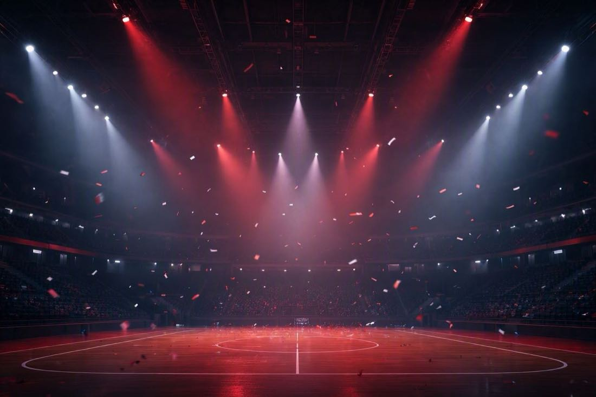

Tell The Daily Broadcast what happened — type it, talk it, or paste a screenshot. Pick one of five channels. Hit Go Live and your ordinary day comes back as a segment with a headline, a cover photo, and correspondents who take it far too seriously.
Ranting, bullet points, a voice memo on the walk home, a screenshot of the thread that ruined your afternoon. It all counts as notes.
SportsCenter for the win. TMZ if there was drama. Nature Doc when you need some distance from it. Your call.
A few seconds later: headline, cover photo, the full segment, and sidebar analysis that nobody asked for.
Every channel gets the same notes about a spilled coffee, a long one-on-one, and a sad desk salad. Here's what each one filed.
A real segment layout, filed to SportsCenter at the Medium setting.

One setting decides how hard the correspondents come for you. It only ever points one direction.
Warm and wholesome. Plays your day for charm, never at your expense. Safe to read to your mom.
Light teasing and a raised eyebrow. Friendly overall — but it definitely noticed.
Sharper roasting, right up to the line. It comes for you and only you — never real people, never anyone else.
A paragraph, a list, or one bitter sentence. The worse your notes, the harder the correspondents work.
Hit the mic and narrate the walk home. It transcribes, then files.
Screenshot the calendar, the text thread, the receipt. It reads the room.
Past broadcasts are saved in your browser so you can reread them. Nothing leaves your machine except the notes you send to generate a segment.
No. Even on High, the jokes point at you. Real people never get roasted.
No. Fragments, typos, and one-word moods are all fine. That's the correspondents' problem now.
Both. You still wrote down your day — it just came back with a camera crew.